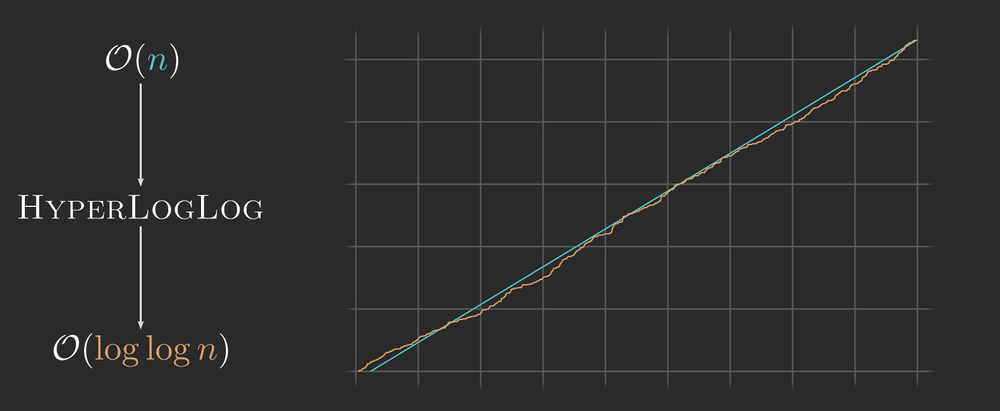
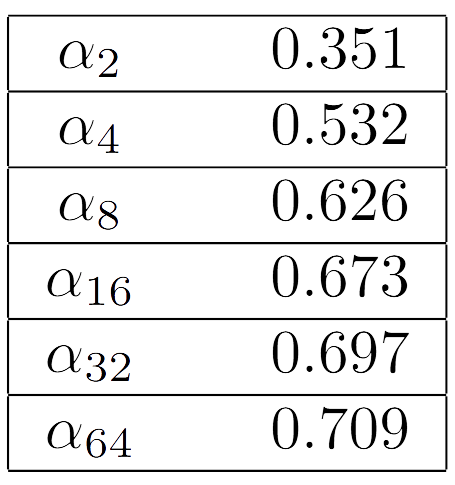
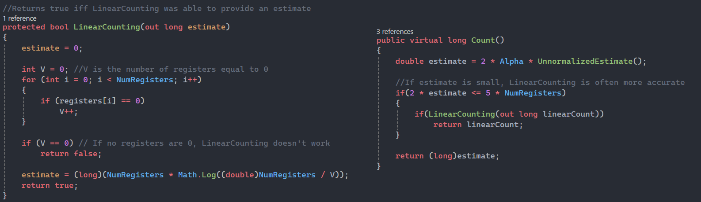

The HyperLogLog datastructure

1) Introduction
This datastructure is able to compress so much data by using randomness. It essentially calculates the number of unique events, by splitting events into buckets (called registers), such that every event gets into a random register. Now each register only keeps track of the rarest event that has occured, and if many registers have seen very rare events, it's likely that it's seen many events.
2) Calculating rarity
Every event gets converted by a random Hash-function into a binary string. If the number of registers $m=2^k$ for some $k\in\mathbb{Z}$, then we can use the first $k=\log_2 m$ bits to determine what register to put this event into. The remaining bits are now used to calculate the rarity of the event.We count the number of leading 0s in the binary string (after the first $k$ bits) and set $M$ to be equal to this quantity. Since each bit is random and independent of the others having $k$ leading 0s has probability \begin{equation*} \begin{split} P(M=k)=\frac{1}{2}\cdot \frac{1}{2}\cdots \frac{1}{2}=\frac{1}{2^k} \end{split} \end{equation*} thus we expect to have seen around $2^k$ events before we see $M=k+1$. To combat randomness we use $m$ registers, such that a single lucky Hash doesn't ruin our estimate. Now all we do is keep track of the rarest event, i.e the largest value of $M$.
3) Reversing probability
We estimate the number of elements in a bucket by its approximation $2^{M-1}$, because we have multiple bins we'll have to average these estimates and then multiply by the number of buckets. We've decided to use the Harmonic mean to average this, because it doesn't jump too far when one of the buckets have a higher $M$ than the others, thus it makes the average far more smooth and resilient to getting lucky hashes. \begin{equation*} \begin{split} Z=\frac{m}{\displaystyle\sum_{i=1}^m \frac{1}{2^{M_i-1}}}=\frac{m}{2\displaystyle\sum_{i=1}^m \frac{1}{2^{M_i}}} \end{split} \end{equation*} and now $Z$ is the average of each bucket, so $mZ\approx n$. However this isn't the case! In fact $mZ$ tends to undercount $n$ by a constant $2\alpha_m$$^1$t. } such that $2m\alpha_m Z\approx n$. The hardest part of developing this algorithm is determining the value of $\alpha_m$, so let's just skip to the result. As $m\rightarrow\infty$, $\alpha_m\rightarrow\frac{1}{\log 2}$ \begin{equation*} \begin{split} \alpha_m=\left(m\int_0^\infty \left[\log_2\left(\frac{2+u}{1+u}\right)\right]^mdu\right)^{-1} \end{split} \end{equation*}
$\alpha_m$ is specific to the Harmonic mean, as changing to a different type of mean will require scaling by a different constant. For example for the geometric mean $\alpha_{16}\approx \frac{4}{5}$.But that's not the only reason this constant exists, if we develop another algorithm that keeps track of how many times $M=k$ has happened for each register, letting this number be equal to $d_i$, and then take the mean of $d_i 2^{M_i}$ the constant $=1$. The reason we dont use this algorithm however, is that it can't distinguish between events. Because if we register the same event 5 times, then $d_i$ would increase by 5 and the average would be roughly 5 times larger. But this algorithm only tries to register unique events, and therefore we dont use this algorithm, but it does show why this constant exists.
For a duplicate to occur, the first $\log_2 m+(M_i+1)$ bits have to be the same, the first $\log_2 m$ bits must be the same, since it needs to hit the same register and then to have the same number of leading zeros, it must have $M_i$ leading zeros and then followed by a 1, thus $\log_2m+M_i+1$ bytes must be exactly the same. The chance of this is \begin{equation*} \begin{split} \frac{1}{2^{\log_2 m+M_i+1}}=\frac{1}{m 2^{M_i +1}}\\ P(d_i=n)=\left(\frac{1}{m 2^{M_i +1}}\right)^n\\ E[d_i]=\sum_{n=0}^\infty n\left(\frac{1}{m 2^{M_i +1}}\right)^n=\frac{1}{1-\frac{1}{m2^{M_i+1}}}\\ E[d_i2^{M_i}]=\frac{2^{M_i}}{1-\frac{1}{m2^{M_i+1}}} \end{split} \end{equation*} \begin{equation*} \begin{split} E[M_i=k]=\frac{n}{2^k} \end{split} \end{equation*} thus to have $E[M_i=k]=d+1$ $n$ must be $=(d+1)2^{k}$ and therefore we take the harmonic sum of $(d+1)2^{M_i}$.
4) Linear counting for small range correction
From this we can isolate $n$: \begin{equation*} \begin{split} P[M_i=0]=\left(1-\frac{1}{m}\right)^n\\ \log(P[M_i=0])=n\log\left(1-\frac{1}{m}\right)\\ \frac{\log(P[M_i=0])}{\log\left(1-\frac{1}{m}\right)}=n \end{split} \end{equation*} and now we can estimate $P[M_i=0]$ as the number of registers that are 0, $V$, divided by the total number of registers, $m$ \begin{equation*} \begin{split} \frac{\log(V/m)}{\log\left(1-\frac{1}{m}\right)}=n \end{split} \end{equation*} and from the Taylor series expansion of $\log\left(1-\frac{1}{m}\right)\approx -\frac{1}{m}-\mathcal{O}\left(\frac{1}{m^2}\right)$ (thus the accuracy of this approximation grows with $m$) \begin{equation*} \begin{split} \frac{\log(V/m)}{-1/m}=n\\ -m\log(V/m)=n\\ m\log(m/V)=n \end{split} \end{equation*} provided $V\neq 0$ we can use this in our algorithm like so

we will use5) Performance
The cost ofTo store $M_i$ we require $\log_2(M_i)$ bits, and $M_i\approx1+\log_2(n/m)=\mathcal{O}(\log[n/m])$. Thus the storage per register is $\mathcal{O}(\log\log [n/m])$ for $n$ insertions. And for $m$ registers the storage is $\mathcal{O}(\log [m\log (n/m)])$, but given that $m$ is constant this makes the storage requirement $\mathcal{O}(\log\log n)$.